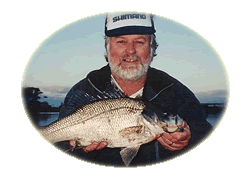
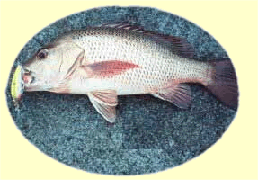

The history of Koolabung Lures
My first introduction to lure fishing came on the banks of the mighty Macleay, targeting Bass just 4km above Kempsey in Northern NSW. Spinning Bass intrigued me enough and quickly I moved on to other quarries in saltwater such as flathead.
In 1970 my thirst for other targets was soon quenched when a good friend from Sydney drew my attention to the art of luring bream. Bream spinning was seen as something of a stunt in those days, a by-catch of a flathead session, but these days has become the norm with B.R.E.A.M. series comps targeting these species by lure only means.

“Painting gave me an insight into colour schemes, helping me design appropriate attracting patterns for different species of fish.”
Eddie was a self-employed painter and decorator

After designing and making lures for mates and myself which worked rather well, plus saved me a few bucks, I decided to try and make some saleable products and break into the cottage lure industry.
It wasn't long before I was in full time production, with the demand for my lures keeping me more away from my passion of fishing.